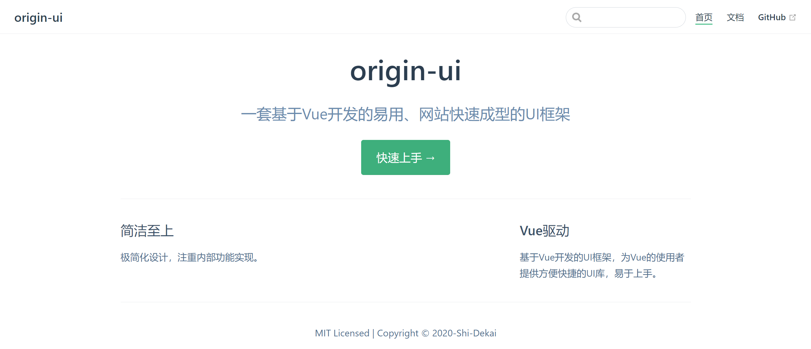
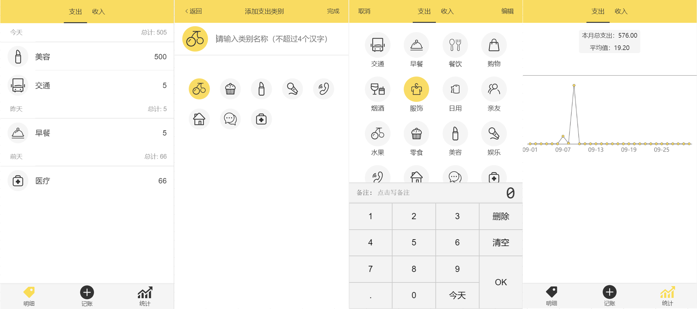
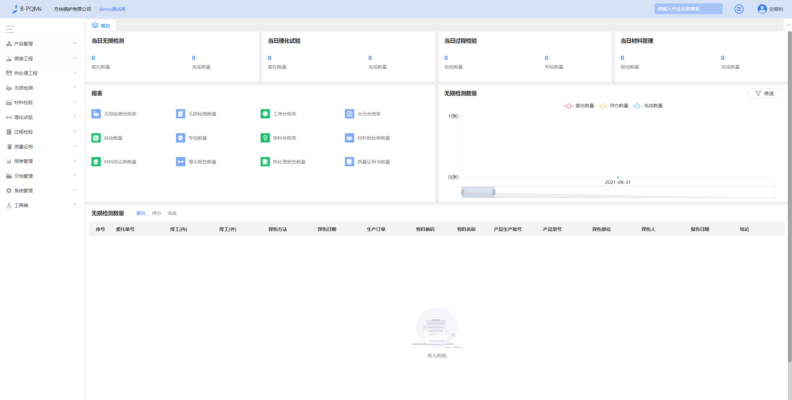

个人项目
-

项目介绍: 该项目是参照Ant Design、Element UI、iView 等 UI 库思路，做的一套基于 Vue 的简易 UI 组件库。目前已支持8个基础组件，更多组件尚在开发中。 每个组件均经历从需求分析到调试，最终以VuePress为基础制作官方文档，发布于npmjs.org。 完成该项目使我对 Vue 的常用特征更加熟悉，同时提升了自己对前端工程化流程的深刻理解，近一步了解开源文化。技术栈：TypeScript/ SCSS/Vue.js/ VuePress/ ES6/ Parcel/ Npm Scripts
-

项目介绍: 起点记账是一款极简的记账产品，该项目使用 Vue 实现。实现功能:项目共包含记账、标签、目标、账单、统计五个页面，实现了记账、管理标签、数据可视化、账单统计、打卡功能。技术栈：TypeScript/Vue2/Vuex/VueRouter/Echart/Yarn/ES6/SCSS
-
项目介绍:是一个使用原生JS开发的，动态显示 CSS画一个乔巴过程的小作品。该作品主要思路是通过间隔计时器遍历预先设置样式代码，将其一个个显示在页面上，并在 style 标签上作同样处理，以使代码CSS 生效。此外，实现了 CSS效果及调速功能。
公司项目
-

1. B-PQMs伯勒产品质量管理软件
项目介绍:该项目是一款面向从事锅炉制造业工程师的软件。我在此项目开发/维护了《产品管理》、《报表管理》、《工具箱》模块等其他页面。期间使用了Element-ui、iView-uiui库 并根据业务场景对相同或类似界面/控件进行 element-ui的二次封装提高开发效率。对Axios进行二次封装使接口请求代码简化易懂易维护。技术栈：Javascript/SCSS/Vue.js/Element-ui/iView-ui/Axios/Npm/Svn/Webpack/ES6 -
2. 钉钉h5应用
项目介绍:该项目是将B-PQMs首页功能抽离至钉钉h5应用中，使用户可以在移动端查看基础数据。此项目是我独立搭建开发维护的，项目 使用了大量的chart，使用的库为Echarts，各个页面分别展示有 柱状图、饼图、折线图技术栈：Javascript/Less/Vue.js/Vue-cli/Vant-ui/Axios/Npm/git/Webpack/ES6
开源项目
-
1. 实现简易jQuery-封装DOM库
项目介绍:该项目是本人在学习原生DOM编程和jQuery过程中，参考jQuery的核心思想对原生DOM进行的一个简易封装，加深了我对DOM与jQuery的理解，并写了一篇《jQuery基本操作》记录总结。 -
项目介绍:该项目使用原生JS和jQuery写的一个首页导航网站,集成了对网站的添加、修改、删除功能，页面简洁清晰，功能逻辑直白易懂。
工作经历
2021.3-2021.9
杭州伯勒计算机技术有限公司